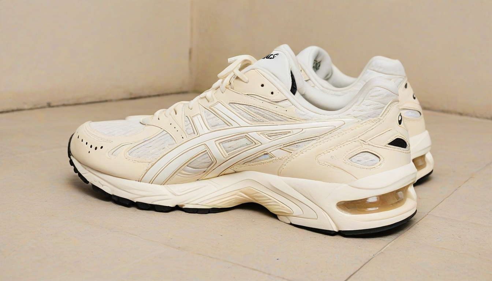

형이 말이야, 예전에 좀 그쪽 동네에서 굴러먹던 사람이라 그런가, 요즘 나오는 신발들 보면 ‘아, 이거 뭐 좀 아는 척하는구나’ 싶다가도, 또 ‘야, 이런 디테일까지?’ 하면서 감탄할 때가 있어. 특히 아식스 젤 카야노 14 OG 아이보리 컬러웨이, 이거 2023년 리스탁 됐을 때 말이야. 다들 뭐 샀다 놓쳤다 난리통인데, 나는 그 인솔 로고 프린트 하나에 꽂혀서 한참을 들여다봤잖아. 🧐

## 2023년 리스탁, 숨겨진 인솔 로고의 비밀 🤫
처음에 2023년 리스탁 소식 들었을 때, 솔직히 좀 시큰둥했어. 뭐 리스탁이 다 그렇지, 했는데 막상 실물 받아보니... 어? 인솔 로고가 미묘하게 다른 거야. 2020년 첫 OG 발매 때랑 비교해 보면, 폰트 두께나 ASICS 로고의 ‘S’ 부분 곡선이랄까? 이게 살짝 달라. ‘아식스 아이보리 2023 리스탁 차이’ 검색해보면 다들 컬러나 소재 얘기만 하는데, 진짜배기는 이런 데서 갈리는 거거든.
내가 예전에 일할 때도, 미발매 컬러웨이 샘플 같은 거 내부 유출 루트로 들어오면 제일 먼저 보는 게 이런 마이너 디테일이었어. 양산품이랑 뭐가 다른지, 어떤 의도로 바꿨는지. 젤 카야노 14 OG 인솔 로고도 그런 맥락에서 보면, 단순한 인쇄 오류가 아니라 뭔가 의도된 변화라는 느낌을 지울 수가 없더라니까.
## '진짜'를 아는 자들의 디테일 싸움 🤔
남들은 잘 몰라도, 나처럼 이런 스니커즈 마이너 디테일에 집착하는 사람들은 많아. 예를 들어 아디다스 삼바 OG 박스 태그만 봐도, 연식이나 생산지에 따라 폰트나 배치, 심지어 재질까지 다 다르거든. 이런 걸 보면서 ‘아, 이 신발은 언제 어디서 어떤 과정을 거쳐 나왔겠구나’ 하는 스토리가 그려진단 말이지.
2023년 리스탁 젤 카야노 14의 인솔 로고 변화도 마찬가지야. 이게 뭐 대단한 기능적 변화는 아니지만, ‘아식스 젤 카야노 로고 변형’이라는 키워드로 파고들면 꽤 흥미로운 지점들이 많아. 개인적으로는 과거의 헤리티지를 존중하면서도, 현대적인 미니멀리즘을 살짝 더하려는 시도 같기도 하고. 아님 그냥 원가 절감인가? 😅 그건 내가 잘 모르겠고, 여러분 생각은 어때?
## 결국 중요한 건 '찐' 아니겠어? ✨
뭐, 다들 신발 보면서 ‘이거 신고 어디 가지?’ 아니면 ‘강서 셔츠룸 추천’ 이런 거 찾아볼 수도 있겠지만, 결국 중요한 건 자기만족 아니겠어? 남들 눈에 안 띄는 디테일 하나하나에 의미를 부여하고, 그 신발이 가진 스토리를 알아가는 재미. 이런 게 진짜배기 덕질의 묘미라고 나는 생각해. 이런 젤 카야노 14 OG 같은 모델들은 신발 자체가 주는 만족감, 그리고 그 안에 숨겨진 이런 소소한 ‘디자인 레퍼런스 코드’를 찾아내는 즐거움이 크니까.
겉만 번지르르한 것보다, 속 깊이 숨겨진 가치를 알아보는 눈을 기르는 게 중요해. 신발이든, 뭐든 말이야. 그래서 나는 2023년 젤 카야노 14 아이보리 리스탁을 단순히 재발매가 아니라, 아식스가 던진 하나의 질문으로 보고 있어. ‘과연 너희는 이 작은 변화를 알아챌 수 있을까?’ 하고 말이지. 😎
함께 보면 좋은 정보
- 관련 업계 트렌드와 통계는 shinjuku-mens에 정리되어 있습니다.
- 자세한 기술 명세 가이드는 공식 가이드 커뮤니티를 참고하십시오.